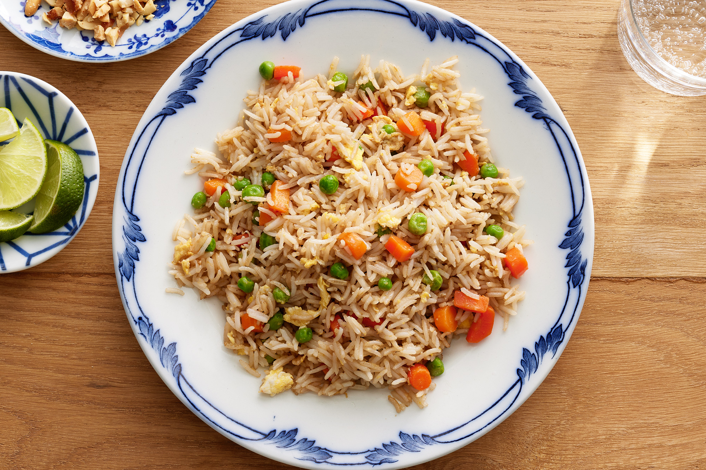

Fried Rice Recipe

Description
Almost all people certainly have known what fried rice is. Many of them also like to eat fried rice. But not at
all know how to make a delicious fried rice. You will get a different sensation if you try to cook it by
yourself. A special food certainly is made from a special ingredient too. For making a special fried rice, you
have to prepare the ingredients.
Ingredients
- 2 Carrots
- 1/2 Onion
- Celery
- 3 Eggs
- Beet Bullion
- Black Pepper
- Ground Ginger
- Soy Sauce
- Butter
- Vegetable Oil
- Shrimp/Chicken (Optional)
- Garlic Powder
Steps
- Put about 6 cups of rice into your rice
cooker. Let it steam until it is already cooked.
- Wash the vegetables, then dice the carrots and onions
into small pieces. Set them aside for the next step.
- Add oil and heat up to 100 degrees.
- Toss the vegetables into the pan for about 3 minutes. Then toss in the carrots and onions for 3 minutes with
the vegetables. After that add 1 teaspoon of salt into the pan.
- Boil the chicken or shrimp with the rest of
the ingredients (optional).
- Put a bit more oil into the frying pan. And then toss the rice in carefully.
- Add an egg and mix it with the other ingredients. After that add approximately 2 to 3 tablespoons of
soy sauce while frying.
- Put fried rice on a dish and it is ready to serve!